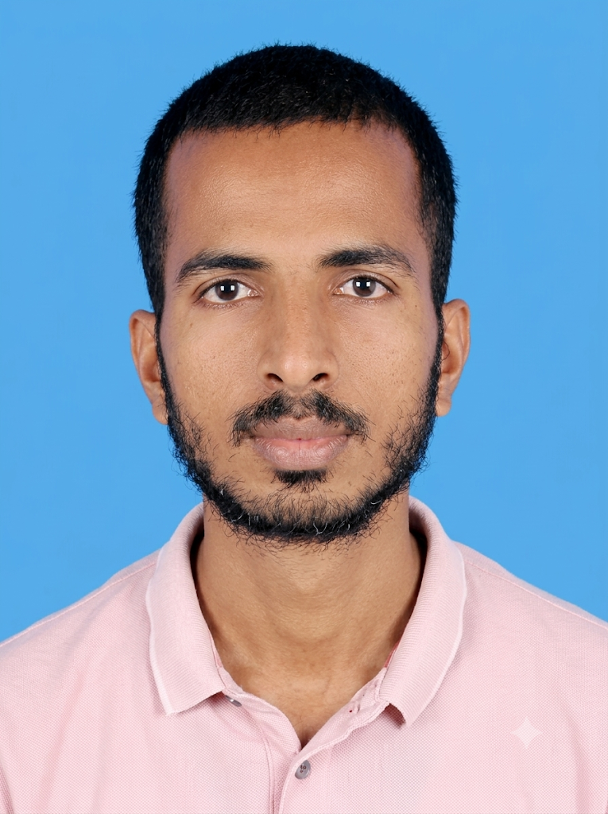

UGC NET & JRFJUNE 2026
99.4percentile
Junior Research Fellowship
Qualified UGC NET and JRF in Sociology.
SOCIOLOGY · ACADEMIC PORTFOLIO
Passionate Learner | Sociology Graduate | Aspiring PhD Scholar
An academic journey grounded in sociology, strengthened by community engagement, and directed towards doctoral study.

99.4percentile
Qualified UGC NET and JRF in Sociology.
AIR249
Qualified GATE Sociology in 2026.
Qualified
December [year to be added].
02 / EDUCATION
From school education under CBSE to postgraduate study in sociology.
Uttar Pradesh Rajarshi Tandon Open University (UPRTOU)
xy.z% Placeholder
University of Allahabad
62.2%
Central Board of Secondary Education (CBSE)
85.2%
Central Board of Secondary Education (CBSE)
89.8%
03 / ACADEMIC WORK
Two completed dissertations exploring social programmes and communication.
A sociological examination of the role of government and non-government schemes in women’s empowerment.
A study of the role of mass communication from a sociological perspective.
04 / COMMUNITY ENGAGEMENT
Community service and participation, documented through certificates of engagement.
2022 — 2024
Completed 240 hours of NSS participation across 2022–2023 and 2023–2024 through Chaudhary Mahadeo Prasad Degree College.
Special camp: 26 February – 3 March 2024.
2023 · PRAYAGRAJ
Social service at Magh Mela, Sangam, Prayagraj. Recognised with a Mela Mitra appreciation certificate for volunteer service.
Event dates: 6 January – 18 February 2023.
05 / PRACTICAL SKILLS
06 / THE NEXT CHAPTER
Building on a foundation in sociology, academic qualifications, and a commitment to continued learning.
Resume to be added
Profile link to be added